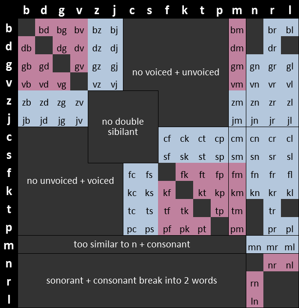

Introduction
Eberban is a logical constructed language aimed to satisfy the following goals :
- being simple : the Eberban grammar allows manipulating predicates with particles in a way that is close to the higher-order logic it translates into, while abstracting away the verbosity of explicitly providing variables as arguments of predicates.
- being regular : valid sentences are syntactically unambiguous. Most grammar rules rely on particles which are organised into families, each starting with a unique prefix. Many additional patterns are shared between particles and predicate words to help with learning groups of related words.
- being expressive : the grammar and core vocabulary focus on providing a simple framework, on top of which can be built abstractions, complex concepts and tools. Since those are built into Eberban itself, users can create their own tools and abstractions to express entirely new concepts.
Eberban takes inspiration from Lojban and other logical languages, but tries novel approaches to satisfy the above goals.
Most resources are hosted on GitHub pages, such as :
- parsers, which transform text into a tree structure, that can also be visualized as nested boxes.
- a dictionary to search words and their definitions.
- learning resources to discover the language grammar and concepts.
If you would like to get involved, please also consider joining our Discord server.
Morphology
The morphology of Eberban is composed of 16 consonants (n, r, l, m, p, b, f, v, t, d, s, z, c, j,
g, k), five vowels (i, e, a, o, u) the letter h, the hyphen - and the quotation marks
[ and ], for a total of 25 symbols. Among the consonants, n, r and l are
designated as (alveolar) sonorants, and play an important role in Eberban’s morphology. The
alphabetical order is hnrlmpbfvtdszcjkgieaou. The same letter appearing multiple times in a row is
considered identical to the letter not being repeated, but can informally be used in written media
to convey length of sounds in speech. Any other character is considered a space, and quotation marks
are also considered a space outside of foreign quotes syntax (explained later).
Strings of multiple vowels and h appear a lot in Eberban’s morphology, and thus are coined vhowels in this book. Note that in vhowels, h can only appear between two vowels.
Words are usually written separated by spaces, however this is not mandatory. Spaces are only mandatory before words starting with a vowel or a sonorant.
Eberban text is usually written all lowercase (outside of foreign text quotes), but uppercase can
informally be used in written media to convey volume (such as yelling). No punctuation symbol is
used but informally punctuation from other languages can be used as long as the proper Eberban
grammar is also used. . is commonly used to visually join two words that must have space between
them, while one or many . surrounded by spaces usually convey a longer pause in speach. Hyphen can
be used at syllable boundary to make them stand-out without breaking the word in two, and also allows
a word to continue on the next line.
Word types
Particles
Particles are words exerting grammatical functions. They can either:
- start with a single non-sonorant consonant, followed only by vhowels, like zi, mio or tiho.
- start with a sonorant or vowels, and be a string of vhowels and sonorants. They can end either with a vowel or sonorant. Exemples: a, on, ahu or nu.
Particles are themselves categorized into families having identical grammar but different meanings. Those families are usually designated using a particle in capital letters (like MI or VEI), which is by convention the first particle in this family in alphabetical order.
All other words are predicate words and express intrinsic meanings, such as “cat”, “language” or “teach”. They are grouped into the following categories :
Roots
Roots are the building blocks of the language and express meanings that would be hard or too long to convey otherwise. They can either:
- start with a single non-sonorant consonant followed by a mix of vhowels and at least one sonorant, medial consonant pair or consonant triplet, like ban, mana, cuina or marne.
- start with a valid initial consonant pair followed by a mix of vhowels and any number of sonorants, medial consonant pairs or consonant triplet (even none), like bju, cpena or djin.
A consonant triplet is a string of 3 consonants C1C2C3 such that C1C2 is a medial pair and C2C3 is an initial pair.
A sonorant can appear only between two vowels or at the end of the root, while a medial pair or consonant triplet can appear only between two vowels, but not at the end.
The following chart shows initial pairs in light blue, medial pairs in pink, and invalid pairs in dark gray (with a short explanation for why they are invalid):

Borrowings
Borrowings allow importing foreign words or names. They are prefixed by the vowel u, and have more relaxed rules about consonants than native Eberban words:
- Initial pairs can also appear in the middle of the word.
- Medial pairs can also appear initially as they can be easily uttered after borrowing prefix u
- Sonorant + consonant also counts as a consonant pair and doesn’t break into 2 words.
- Sonorant + initial pair also counts as a consonant triplet and doesn’t break into 2 words.
After the u prefix the borrowing can start by a vowel, a single consonant, a initial or medial consonant pair, a consonant triplet or h. If this first letter is a u it must be prefixed with a ’ to separate it from the the prefix.
Borrowings must end with a vowel, or a vowel followed by a single consonant (not only sonorants). In written media, borrowings must be followed by space(s), which is realized in speech by pausing after the borrowing to properly separate it from the following word.
Similarly, the initial u must be preceded by space(s), and realized orally as either a pause or a glottal stop.
Freeform variables
Freeform variables allow speakers to define their own predicates with less morphological restrictions than with roots or dedicated particles. They follow the same morphology as borrowings but use the i prefix instead of u.
Compounds
Compounds allow making new words from multiple other kind of words. They start with either e, en or er and follow the same rule as the u of borrowings. Their structure will be detailed later in this book.
Example
With spaces : a za ualis zue gali spie ebansa eberban
With mandatory spaces only : aza.ualis.zuegalispie.ebansa.eberban
Meaning: Alice is happy to speak in Eberban.
Particles : a, za, zue
Borrowing : ualis
Freeform variable: ibar (not present in exemple)
Root : gali, spie
Compounds : ebansa, eberban
Reasoning
Outside of borrowings and assignable names, encountering a non-sonorant consonant or a pause means it is the end of a word; unless it the first letter of a medial consonant pair which cannot be misunderstood for the start of a new word. Spaces prevent words starting with a vowel or sonorant to “merge” into the previous words.
These simple rules prevent any ambiguity of word boundaries, which is called a Self-Segregating Morphology.
Phonology
| Letter | IPA | Description | Audio |
|---|---|---|---|
| h | [h] | a glottal aspirant | |
| n | [n], [ŋ] | a dental or velar nasal | |
| r | [ɣ] [ʁ] ([r], [ʀ]) | a velar or uvular fricative (alveolar or uvular trills are also accepted) | |
| l | [l] | a lateral approximant | |
| m | [m] | a bilabial nasal | |
| p | [p] | an unvoiced bilabial stop | |
| b | [b] | a voiced bilabial stop | |
| f | [f] | an unvoiced labiodental fricative | |
| v | [v] | a voiced labiodental fricative | |
| t | [t] | an unvoiced dental/alveolar stop | |
| d | [d] | a voiced dental/alveolar stop | |
| s | [s] | an unvoiced alveolar sibilant | |
| z | [z] | a voiced alveolar sibilant | |
| c | [ʃ], [ʂ] | an unvoiced coronal sibilant | |
| j | [ʒ], [ʐ] | a voiced coronal sibilant | |
| k | [k] | an unvoiced velar stop | |
| g | [ɡ] | a voiced velar stop | |
| i | [i] | a front close vowel | |
| e | [ɛ], [e] | a front mid vowel | |
| a | [a], [ɑ] | an open vowel | |
| o | [o], [ɔ] | a back mid vowel | |
| u | [u] | a back close vowel |
At the start of a vowel or sonorant initial word, it is mandatory to
make a pause or utter a glottal stop [ʔ]
Consecutive vowels are separated by hiatuses, but glides like
[j]
Where spaces are allowed, a speaker or writter can express hesitation by using one or more of the letter n surrounded by spaces, which is realized as [n̩].
In speech, the schwa sound [ə] can be used in between consonants of a pair if the speaker has trouble uttering the pair as-is. It has no written equivalent.
Quotation marks [ and ], when used for foreign quotes grammar, are both realized
as a palatal click ([ǂ]
Example
Sentence : a za ualis zue gali spie nnnn ebansa eberban
Pronounciation : [ʔa za ʔualis zue ɡali spie .. n̩ː .. ʔebansa ʔeberban]
Big thanks to zuna for the recordings!
Logic framework
Eberban is based on a custom Higher-order Logic (HOL) and tries to stay pretty close to expressions in such logic while being targeted for human speech.
Eberban grammar allows the speaker to manipulate predicates. They are functions that take arguments as input and output a truth value which can be true, false or unknown/undefined. They are introduced by predicate words or created from other predicates using Eberban grammar.
Arguments are not filled using predicate words directly and there is no word that directly represents them. Instead some particles allow the speaker to select which arguments are going to be used for various operations on predicates, such as connecting them with each other. Arguments are typed, and can either represent predicates or non-predicates which are called atoms.
The first of these arguments is handled automatically by the grammar and is called the context argument. It is used to carry information between predicates without verbosity for speakers to implement things, such as tenses.
Other arguments are represented using the vowels e, a, o, u in this order. They are used in definitions but also in some families of particles related to argument selection. They are called explicit arguments (to exclude the implicit context argument), and we call arity (N-ary) the number of explicit arguments.
Here is an exemple of a simple predicate :
mian
\[ \text{mian}(c,e) = \text{[$e$ is a cat in context $c$]} \]
Given $(c), $(e):
$(e) is a cat in context $(c).$(c) and $(e) are arguments that will be provided when used in a sentence.
In future explanations we’ll omit the context argument outside of logical notation to be shorter, unless the context argument is the focus of the explanation.
Any predicate word not yet defined in the dictionnary or by the speaker return unknown/undefined for any arguments.
Chaining
When two predicates are strung one after the other they form a new predicate, which has the same arguments as the left predicate.
Every predicate has a default chaining behavior which dictates how two predicates are connected together. If the left predicate has intransitive behavior, then its E place will interact with the right predicate. Otherwise if the left predicate has transitive behavior, then the A place is used.
For root words, they have transitive behavior if they end with a vowel, while they have intransitive behavior if they end with n, r or l.
This place can expect either an atom/generic, or a predicate. As this can greatly impact the structure of sentences, this is encoded in root words with the following rules:
- if the root is a form CCV, the A place is a predicate place.
- if the root ends with an -i, the A place is a predicate place.
- otherwise the place is an atom/generic place.
- an intransitive root shouldn’t have a E predicate place, as it will be chained to as if it was an atom/generic place. If a predicate have a single predicate place, it should be transitive with a single A predicate place. A predicate with many predicate places can have a E predicate place but it must be transitive.
Particles acting as predicates have different rules which will be explained later.
When chaining predicates the new predicate inherits the chaining behavior of the left predicate.
Atom argument chaining
If the chaining argument is an atom argument, then the variable filling this argument also fills the E argument of the right predicate. The context argument is automatically shared between left and right predicates.
mian blan
\[ \begin{align} \text{mian}(c,e) &= \text{[$e$ is a cat]} \\ \text{blan}(c,e) &= \text{[$e$ is beautiful]} \\ \ \\ \text{blan}_1(c,e) &= \text{blan}(c,e) \\ \ \\ \text{mian}_1(c,e) &= \text{mian}(c,e) \wedge \text{blan}_1(c,\color{magenta}{e}) \end{align} \]
Given $(c),$(e):
$(e) is a cat and is beautiful.
If the right predicate has more than one explicit argument, then it is wrapped in a predicate having only one explicit argument and every other argument is filled with existential variables. The process of wrapping the predicate and creating existential variables to have the correct arity is called arity mismatch resolution and it is a key aspect of Eberban grammar to reduce verbosity in simple cases.
mian etiansa
\[ \begin{align} \text{etiansa}(c,e,a) &= \text{[$e$ eats $a$]} \\ \ \\ \text{etiansa}_1(c,e,a) &= \text{etiansa}(c,e,a) \\ \color{magenta}{\text{etiansa}^w_1(c,e)} &= \color{magenta}{\exists a. \text{etiansa}_1(c,e,a)} \\ \ \\ \text{mian}_1(c,e) &= \text{mian}(c,e) \wedge \text{etiansa}^w_1(c,e) \end{align} \]
Given $(c),$(e):
$(e) is a cat and there exists an $(a) such that $(e) eats $(a).
$(e) is a cat that eats something.
Predicate argument chaining
If the chaining argument is a predicate argument, then the right predicate is stated to be equivalent to the predicate represented by the argument. If the predicate argument and right predicate don’t match in arity, then the arity mismatch resolution is performed. The right predicate is not stated as is, and will be instantiated by the left predicate (according to its definition). The right predicate is able to be instantiated multiple times and with any (correctly typed) arguments, and with a different context argument.
tce mian
\[ \begin{align} \text{tce}(c,e,A) &= \text{[$e$ is a set of things that satisfies $A$ (1-ary)]} \\ \ \\ \text{mian}_1(c,e) &= \text{mian}(c,e) \\ \ \\ \text{tce}_1(c,e,A) &= tce(c,e,A) \color{magenta}{\wedge A \Leftrightarrow \text{mian}_1} \end{align} \]
Given $(c), $(e), $(A):
$(e) is a set of things that satisfies $(A), and $(A) is equivalent to mian.
$(e) is a set/group of cats.
gali mian
\[ \begin{align} \text{gali}(c,e,A) &= \text{[$e$ is happy about $A$ (0-ary) being true]} \\ \ \\ \text{mian}_1(c,e) &= \text{mian}(c,e) \\ \text{mian}^w_1(c) &= \exists e. \text{mian}_1(c,e) \\ \ \\ \text{gali}_1(c,e,A) &= gali(c,e,A) \wedge A \Leftrightarrow \text{mian}^w_1 \end{align} \]
Given $(c), $(e), $(A):
$(e) is happy about $(A) being true, and $(A) is equivalent to \(\text{mian}^w_1\).
$(e) is happy that there exist a cat.
Longer chains
When more than two predicates are strung one after the other they are chained in
right-grouping order (A (B (C D))).
mi dona tcu mian
\[ \begin{align} \text{mi}(c,e) &= \text{[$e$ is a speaker]} \\ \text{dona}(c,e,a) &= \text{[$e$ likes $a$]} \\ \text{tcu}(c,e,A) &= \text{[$e$ is the set of all things that satisfy $A$ (1-ary)]} \\ \ \\ \text{mian}_1(c,e) &= \text{mian}(c,e) \\ \ \\ \text{tcu}_1(c,e,A) &= \text{tcu}(c,e,A) \wedge A \Leftrightarrow \text{mian}_1 \\ \text{tcu}^w_1(c,e) &= \exists A. \text{tcu}_1(c,e,A) \\ \ \\ \text{dona}_1(c,e,a) &= \text{dona}(c,e,a) \wedge \text{tcu}^w_1(c,a) \\ \text{dona}^w_1(c,e) &= \exists a. \text{dona}_1(c,e,a) \\ \ \\ \text{mi}_1(c,e) &= \text{mi}(c,e) \wedge \text{dona}^w_1(c,e) \end{align} \]
Given $(c), $(e):
$(e) is a speaker who likes all cats.
Explicit binding (VI/FI/SI/PE/KI/GI/BA)
Left atom place selection
When the speaker wants to interact with an argument that normal chaining doesn’t select (due to transitivity, or because they want to interact with O or U arguments), it is possible to attach additional bindings using the VI family of particles after a predicate, followed by another (chain of) predicate(s), which is closed by the vei particle to return to the previously seen chaining behavior.
vei is the only member of family VEI, and not a member of VI.
ve, va, vo, vu allow binding atom (or generic) arguments :
mi duna [vo mo vei] meon
\[ \begin{align} \text{mi}(c,e) &= \text{[$e$ is a speaker]} \\ \text{duna}(c,e,a,o) &= \text{[$e$ gives $a$ to $o$]} \\ \text{mo}(c,e) &= \text{[$e$ is a listener]} \\ \text{meon}(c,e) &= \text{[$e$ is an apple]} \\ \ \\ \text{mo}_1(c,e) &= \text{mo}(c,e) \\ \text{meon}_1(c,e) &= \text{meon}(c,e) \\ \ \\ \text{duna}_1(c,e,a,o) &= \text{duna}(c,e,a,o) \color{magenta}{\wedge \text{mo}_1(c,o)} \wedge \text{meon}_1(c,a) \\ \text{duna}^w_1(c,e) &= \exists a \exists o. \text{duna}_1(c,e,a,o) \\ \ \\ \text{mi}_1(c,e) &= \text{mi}(c,e) \wedge \text{duna}^w_1(c,e) \\ \end{align} \]
Given $(c), $(e):
$(e) is a speaker who gives an apple to a listener.
To bind more than one argument of the same predicate we have to use the FI family, which interacts with the same predicate as the last non-closed VI.
The FI family follows the same pattern of vowels as VI.
The above sentence can thus be rewritten as duna [ve mi, fo mo vei] meon or
even as duna [ve mi, fo mo, fa meon vei]. FI have additional members:
feu to bind the same place as the previous FI or VI in the chain,
while fau binds the next place (this allows bind places of a predicate
having more than 4 slots, which should however be rare).
In the last exemple it is possible to omit the final vei. It is, however,
not possible to do so in the previous exemples as we would get the chain
mo meon which is not what we want.
Arguments list
Between VI/FI and the inner predicate an arguments list can be provided by having zero or more KI/GI/BA terminated with be, in which case the bindings will occur with those arguments instead of the arguments of the predicate after be.
KI (all particles starting with k-) represent an atom or generic argument $(x) and have meaning \(ki(c,e) = [\text{$e$ is variable $x$}]\).
GI (all particles starting with g-), however, represents a predicate whose arity and type will be inferred from its usage in the sentence. All GI starting with gi- have intransitive sharing behavior, while the others starting with ge/ga/go/gu- have transitive behavior. For transitive GI, chaining to a GI ending with -i will be done by equivalence, otherwise by sharing (like the final -i rule for roots).
Any BA used in the argument list allow skipping this argument if it is not used in the inner predicate. Which BA member is used doesn’t matter.
mi dona [va ke be: mian etiansa ke]
\[ \begin{align} \text{mian}(c,e) &= \text{[$e$ is a cat]} \\ \text{etiansa}(c,e,a) &= \text{[$e$ eats $a$]} \\ \ \\ \text{etiansa}_1(c,e,a) &= \text{etiansa}(c,e,a) \wedge \color{magenta}{\text{ke}_1(c,a)} \\ \text{etiansa}^w_1(c,e) &= \exists a. \text{etiansa}_1(c,e,a) \\ \ \\ \text{mian}_1(c,e) &= \text{mian}(c,e) \wedge \text{etiansa}^w_1(c,e) \\ \text{mian}^w_1(c) &= \exists e. \text{mian}_1(c,e) \\ \ \\ \text{va}_1(c,e) &= \color{magenta}{\text{ke}_1(c,e)} \wedge \text{mian}^w_1(c) \\ \ \\ \text{dona}_1(c,e,a) &= \text{dona}(c,e,a) \wedge \text{va}_1(c,a) \\ \text{dona}^w_1(c,e) &= \exists a. \text{dona}_1(c,e,a) \\ \ \\ \text{mi}_1(c,e) &= \text{mi}(c,e) \wedge \text{dona}^w_1(c,e) \\ \end{align} \]
Given $(c), $(e):
$(e) is a speaker who likes [something eaten by a cat].
BA can also be used outside of the argument list, which adds an argument at the end of the list and uses it directly. ba declares an atom/generic argument (like a KI), bahi a transitivite predicate argument (like a gi-initial GI), and bahe an intransitive predicate argument (like a non gi-initial GI). bai, baihi and baihe on the other hand always adds an argument at the end of the sentence arguments list, which is mostly useful when asking questions.
The above example can thus be shortened as mi dona [va be mian etiansa ba].
Right place and chaining selection
When it is only needed to bind one or two places of a predicate, using VI/FI and multiple lists of multiple arguments quickly becomes verbose. For that reason, predicates can be prefixed with particles of family SI (all particles starting with s-), which override the chaining behavior.
se, sa, so, su select the place corresponding to its vowel both for the argument bound with a predicate on its right, and for the single argument that is exposed in the combined predicate. The right place is bound by sharing, while adding a final -i makes it bound by equivalence.
mian se etiansa blan
\[ \begin{align} \text{blan}(c,e) &= \text{[$e$ is beautiful]} \\ \ \\ \text{blan}_1(c,e) &= \text{blan}(c,e) \\ \ \\ \text{etiansa}_1(c,e,a) &= \text{etiansa}(c,e,a) \wedge \text{blan}_1(c,\color{magenta}{e}) \\ \text{etiansa}^w_1(c,\color{magenta}{e}) &= \exists a. \text{etiansa}_1(c,e,a) \\ \ \\ \text{mian}_1(c,e) &= \text{mian}(c,e) \wedge \text{etiansa}^w_1(c,e) \\ \end{align} \]
Given $(c), $(e):
$(e) is a cat that eats something, and $(e) is beautiful.
SI particles with two vowels (except i) allow to select both, the two vowels representing the two exposed place, and the second vowel corresponding to the slot bound with a predicate on its right. As with single vowel the right place is bound by sharing, while adding a final -i makes it bound by equivalence.
meon sae etiansa mian
\[ \begin{align} \text{mian}_1(c,e) &= \text{mian}(c,e) \\ \ \\ \text{etiansa}_1(c,e,a) &= \text{etiansa}(c,e,a) \wedge \text{mian}_1(c,\color{magenta}{e}) \\ \text{etiansa}^w_1(c,\color{magenta}{a}) &= \exists e. \text{etiansa}_1(c,e,a) \\ \ \\ \text{meon}_1(c,e) &= \text{meon}(c,e) \wedge \text{etiansa}^w_1(c,e) \\ \end{align} \]
Given $(c), $(e):
$(e) is an apple which is eaten by a cat.
SI particles follow a more general pattern to support more slots and usages:
- si followed by a single vowel makes the predicate “transparent” by re-exposing all the places of the predicate on its right, which is bound to the slot corresponding to the vowel used. This is mostly useful with predicates having a proposition (0-ary) place, such that the predicates before and after can be bound together “across” the predicate with the proposition place.
- Otherwise, SI particles are composed of an s followed either by one or many e/a/o/u or a single i, which can optionally be followed by h followed by a single e/a/o/u. The one or many e/a/o/u lists the slots of the predicate to expose, while a single i exposes none. The h followed by a single e/a/o/u selects the slot bound with a predicate on the right. When absent, the last e/a/o/u is used instead. Final -i encodes if the place is bound with sharing or equivalence.
Exemples :
- sia: Transparent A
- sea: Expose E and A, chain to A with sharing
- seho: Expose E only, chain to O with sharing
- saeoi: Expose A, E and O (in this order), chain to O with equivalence.
Left predicate place selection
Using ve, va, vo, vu on a predicate argument will not provide its definition but instead share it like an atom argument with the following predicate. The bound place must have the same predicate argument type however. To provide a definition of the predicate argument the particles vie, via, vio, viu (and FI equivalents) must be used. FI have again additional members: fei to bind the same place as the previous FI or VI in the chain, while fai binds the next place.
If we take the example tce mian from the previous chapter it is equivalent to
tce via mian. Sharing with ve, va, … can be used like so:
mi katmi [va sae tuli mo]
\[ \begin{align} \text{katmi}(c,e,A) &= \text{[$e$ wants $A$ (0-ary) to be true]} \\ \text{tuli}(c,e,A) &= \text{[$e$ needs $A$ (0-ary) to be true]} \\ \text{mo}(c,e) &= \text{[$e$ is a listener]} \\ \ \\ \text{mo}_1(c,e) &= \text{mo}(c,e) \\ \ \\ \text{tuli}_1(c,e,A) &= \text{tuli}(c,e,A) \wedge \text{mo}_1(c,e) \\ \text{tuli}^w_1(c,A) &= \exists e. \text{tuli}_1(c,e,A) \\ \ \\ \text{katmi}_1(c,e,A) &= \text{katmi}(c,e,A) \color{magenta}{\wedge \text{tuli}^w_1(c,A)} \\ \text{katmi}^w_1(c,e) &= \exists A. \text{katmi}_1(c,e,A) \\ \ \\ \text{mi}_1(c,e) &= \text{mi}(c,e) \wedge \text{katmi}^w_1(c,e) \\ \end{align} \]
Given $(c), $(e):
$(e) is a speaker who wants some proposition (which is needed to be true by a listener) is true.
While using via, it has a different meaning :
mi katmi [via sae tuli mo]
\[ \begin{align} \text{mo}_1(c,e) &= \text{mo}(c,e) \\ \ \\ \text{tuli}_1(c,e,A) &= \text{tuli}(c,e,A) \wedge \text{mo}_1(c,e) \\ \text{tuli}^w_1(c) &= \exists e. \exists A. \text{tuli}_1(c,e,A) \\ \ \\ \text{katmi}_1(c,e,A) &= \text{katmi}(c,e,A) \color{magenta}{\wedge A \Leftrightarrow \text{tuli}^w_1} \\ \text{katmi}^w_1(c,e) &= \exists A. \text{katmi}_1(c,e,A) \\ \ \\ \text{mi}_1(c,e) &= \text{mi}(c,e) \wedge \text{katmi}^w_1(c,e) \\ \end{align} \]
Given $(c), $(e):
$(e) is a speaker who wants that [some truth is needed by a listener] is true.
Brackets
pe and pei are like spoken brackets that wrap a predicate or chain of
predicates to define a new one, and have higher priority than chaining : A B pe C D pei E F will be chained in order A (B ([C D] (E F))) instead of A (B (C (D (E F)))). pe can also be followed by an argument list to define the
arguments of this new predicate.
Using VI/FI/SI is often preferred and more simple than using pe and pei, but in some cases it is not possible. Those cases will be presented in later chapters.
Multi-places VI
VI family extends to particle having multiple EAOU vowels, each optionaly preceeded by a I. Each non-final EAOU will bind a single predicate from the following chain, while the last vowel binds the rest.
- mi dona vao: mo, meon: I give you an apple.
- mi kelo vaio: za ubob, sae coriu vihon: I’m thanksfull to Bob that I own a car.
- drie veao: mi, meon, e uiuro sfia jo ta: I buy apple(s) for 0.2 EUR (total).
Sentences (A/O/NI/RA/RI/PO)
Eberban sentences all start with particles in families A, O or NI, which are respectively all particles which start with a-, o- and n-. They are followed by a combination of these elements:
- a definable word: a root, compound, GI and i-variable (optionally namespaced, see ohi explanation below).
- an inner predicate, which is a predicate chain optionally prefixed by an argument list.
A, O and NI differ in what is expected after them:
- A must be followed by an inner predicate.
- NI must be followed by a definable word.
- O must be followed by a definable word then an inner predicate.
If the first sentence of a paragraph doesn’t start with A/O/NI, then it is implicitly a a sentence.
A family
-
a (assertion): a allows the speaker to make an assertion of a proposition (0-ary predicate).
-
an (context update): The context argument of the predicate wrapped with a is filled with a globally managed context variable that can be updated using an. an wraps a 1-ary predicate that takes as its parameter the new context, which can thus be constrained in terms of the current implicit context argument. The vocabulary contains many predicates designed to easily be used with an to provide many important concepts, such as tenses.
-
al (injunction): al allows the speaker to make a request/order/command.
All A particles except an get their meaning from their associated compound e A sai (e a sai for a, e al sai for al, …). This allows to easily add new sentence starters similar to speech acts in other languages.
e A ze can be used to state again the content of the last A sentence.
O family
-
o (question): o allows the speaker to ask a question by defining a predicate to be used by the interlocutors. This predicate must then be used in reply.
A 0-ary predicate prompts the listener to assert it is true (a gi), that it is false (a bi/zi gi), or that it is unknown (mui). (TODO: Add an easy way to state the answer to the question is unknown / gi equivalent to mui).
Similarly, a higher arity predicate prompts the listener to provide the required arguments to make the predicate true, to negate it if there are no such arguments, or to assert that it is unknown.
-
on (definition): on allows the speaker to assign a definition to a word, and is an important tool to create the vocabulary of Eberban and avoid repetitions.
It can also be used by speakers to simplify complex sentences by defining part of it using on, then using the defined predicate(s) in a a sentence.
Note that the definition doesn’t use the global context argument, and instead uses the context argument provided by the sentence using this predicate.
-
oni (capturing definition): Same as on but captures the current global context. The implicit context argument is ignored.
-
onu (performative / axiom definition): Shorthand of defining a predicate using on then enabling it as an axiom with nu. Can be used as an equivalent to a performative speech act in natural language.
-
ohi (imports): Imports definitions and enabled axioms from eberban quote in slot E under the namespace represented by the “defined predicate” following ohi. Predicates in namespaces can be used by prefixing them with the namespace predicate followed by PI (with single member pi) If word ga is imported in namespace gi (using
ohi gi <quote defining ga>), then it can be used withgi pi ga. -
oie/oia/oio/oiu (set defaults): Set the default binding for a slot of the given predicate. See the chapter on defaults
NI family
-
nu (enable axiom): Considers the provided definable word as an axiom, a proposition that is true by definition, and which is evaluated within the current global context.
Redefining this word will not change the enabled axiom, however enabling it again using nu will disable the previous one and enable the new one.
-
ni (disable axiom): Disable an axiom previously enabled with nu.
-
nohu: enable all axioms in given namespace.
-
nohi: disable all axioms in given namespace.
-
no: extract a predicate from its namespace to put it in the root namespace. Equivalent to
on <pred> <namespace> pi <pred> -
noi: extract all predicates from given namespace.
noi <namespace>is equivalent to sayingno <namespace> pi <pred>for all<pred>in<namespace>.
RA and RI erasers
ra is a special word which erase anything said since the start of the current sentence, initial A/O/NI included. It must be surrounded by spaces or pauses.
It is able to erase it even if the text is ungrammatical, and will erase anything back to the start of the last sentence where the text was still grammatical (this means that an ungrammatical sentence followed by grammatically-looking sentences actually just counts as a single ungrammatical sentence).
However one must be careful with foreign quotes. If the text was grammatical until now, a ra appearing inside the foreign quote will be quoted and will not erase the sentence. However if the sentence was ungrammatical, then ra will erase the sentence even if it looks like it is inside a foreign quote. To avoid this issue, it is recommended to properlly close the foreign quote (as if the text was grammatical), so that ra will properly erase the sentence regardless of if the sentence was grammatical or not.
Exemple : a sune
a not eberban text raa sunu
To erase only a part of a sentence, RI can be used to erase the content of the current chain (it must still be grammatical). If used inside a scope like VI/PE/.. and more needs to be erased, the chain must be made valid again (by adding a dummy ma for exemple), the scope needs to be closed (with VEI/PEI/..), and then RI can be used again.
VI/PE/.. can thus also be used as a marker when you think you may make a mistake.
Exemple : a mi pe
buri meon rietiansa meon
Paragraph marker PO
PO can be placed before A/O/NI to mark a change of subject or new paragraph. If PO is not followed by one of them then a is implied. If multiple prefixes in a row are used it must be the first of them.
PO contains 2 members po and poi, which affects definitions involving namespaces:
- Inside a text imported with ohi, po marks the following definitions as public, meaning they’ll be accessible in the namespace using PI. poi on the other end marks the following definitions as private, making them inaccessible in the namespace. This allows to hide implementation details.
- Outside a text imported with ohi, predicates defined in a namespace will not be exported by noi if defined in a poi paragraph, while they will be exported if defined in a po paragraph. In both cases they are accessible with PI.
Conversations and special namespaces
In a conversion between multiple interlocutors, the following rules applies:
- the context is carried between the sentences of all interlocutors, in order of utturance
- a context transformation is applied when changing speaker to update personal pronouns and related concepts (TODO: create word for it and define how it works)
- definitions made by an interlocutor applies to all. All interlocutors shares the same word meanings in the root namespace.
MI is used for special namespaces than can be used but not modified freely by the speakers, and allows mitigating problems that can be caused by the above rules (like an interlocutor redefining a word another wants to use for its former meaning).
- mio (inclusive we) namespace contains all the words defined in the official dictionnary. It can be used to access a word that has been overwritten by any interlocutor’s definition.
- mi (speaker) namespace contains all the words from mio, but is modified by any definitions made by the speaker; and is not modified by definitions made by other interlocutors.
- mo (interlocutor) namespace contains all the words from mio, but is modified by any definitions made by interlocutors; and is not modified by definitions made by the speaker.
Logical primitives (MI)
Particles of family MI (all particles starting with m-) act as predicate words, and some of them are defined directly in logical notation with the goal to express logical primitives that the grammar itself don’t cover.
\[ \begin{align} \text{ma}(c,e) &= \text{is-atom}(e) \\ \text{mai}(c,e) &= \top \\ \text{mae}(c,E,A,o) &= \forall x_0 \dots \forall x_n. \ E(c,x_0,\dots,x_n) \Leftrightarrow A(c,o,x_0,\dots,x_n) \\ \text{mao}(c,e,A,O) &= \forall x_0 \dots \forall x_n. \ O(c,x_0,\dots,x_n) \Rightarrow A(c,x_0,\dots,x_n) \\ \text{mui}(c) &= \text{unknown} \\ \text{mue}(c,e) &= c = e \\ \text{mua}(c,e,A) &= A(e) \\ \end{align} \]
ma (intransitive) wraps the primitive concept of its argument being an atom.
mai (intransitive) puts no constraint on its argument, and is true for any possible $(e). However to be used $(e) must exist (at some point an existential variable must be created), and for some definitions expressing this existence and nothing more is useful.
mae (transitive) allows to perform partial application, stating that $(E) (which have $(n) arguments) is equivalent to $(A) (which have $(n + 1) arguments) with its first slot “filled” by $(o). It can be used to manipulate arguments as lists, perform operations on them and then evaluate predicates with them.
mao (transitive) allows the speaker to express the concept that $(A) is a subset of $(O), in the sense that any list of arguments that satisfy $(A) also satisfy $(O). It is useful as it doesn’t require the language itself to support a variable number of arguments. Instead both $(A) and $(O) are just considered predicates of possibly unknown arity and only the implication is relevant. $(A) and $(O) can be of different arities, in which arity mismatch resolution can be used to give them identical arity. This word can be useful for some definitions, or to express that a predicate $(A) represents multiple combinations of values that make $(O) true, that answers a question represented by $(O). $(E) slot is skipped to make it easier to use in sentences.
mui (intransitive) always returns the unknown truth value.
mue (intransitive) and mua (transitive) allows the speaker to interact with the usually hidden context argument. mue accepts a 1-ary predicate that is true when provided the context as an explicit argument, while mua takes a proposition $(A) and an atom $(e) such that $(A) is true when $(e) is provided as the hidden context argument. These predicate words are what allows the context argument to be really useful: the grammar automatically forwards the context parameter for the speaker, which can then be used by predicates.
Other MI particles are not logical wrappers, they are simply root words included in MI for convenience and will be explained in a later chapter.
Predicate transformations (ZI/BI)
Particles of the ZI family (all particles starting with z-) are used to transform the immediately following predicate, before chaining or explicit bindings are performed.
To use a ZI on more than one predicate word it should be wrapped in brackets pe … pei, which itself will be prefixed with ZI.
Negations
zi allows the speaker to negate the predicate being prefixed. However, it doesn’t negate any existential variables created when performing arity mismatch resolution, other predicates in the chain, or explicit bindings. zi is called the short scope negation.
mi zi etiansa meon
\[ \begin{align} \text{mi}(c,e) &= \text{[$e$ is a speaker]} \\ \text{etiansa}(c,e,a) &= \text{[$e$ eats $a$]} \\ \text{meon}(c,e) &= \text{[$e$ is an apple]} \\ \ \\ \text{meon}_1(c,e) &= \text{meon}(c,e) \\ \ \\ \text{etiansa}_1(c,e,a) &= \color{magenta}{(\neg \text{etiansa}(c,e,a))} \wedge \text{meon}_1(c,e) \\ \text{etiansa}^w_1(c,e) &= \exists a. \text{etiansa}_1(c,e,a) \\ \ \\ \text{mi}_1(c,e) &= \text{mi}(c,e) \wedge \text{etiansa}^w_1(c,e) \\ \text{mi}^w_1(c) &= \exists e. \text{mi}_1(c,e) \end{align} \]
Assertion given $(c):
I and an apple exists, but I don’t eat it.
Would be false if no apple existed.
There also exists a long scope negation with particle bi, which also negates existential variables introduced by the arity mismatch resultion and other predicates in the chain or explicit bindings.
mi bi etiansa meon
\[ \begin{align} \text{etiansa}_1(c,e,a) &= \text{etiansa}(c,e,a) \wedge \text{meon}(c,e) \\ \text{etiansa}^w_1(c,e) &= \color{magenta}{\neg (\exists a. \text{etiansa}_1(c,e,a))} \\ \ \\ \text{mi}_1(c,e) &= \text{mi}(c,e) \wedge \text{etiansa}^w_1(c,e) \\ \text{mi}^w_1(c) &= \exists e. \text{mi}_1(c,e) \end{align} \]
Assertion given $(c):
I exist and it is false that I eat an apple.
It doesn’t imply the existence of an apple.
bi is in its own family BI as it transforms more than just the prefixed predicate.
Names
Prefixing a 1-ary predicate with za transforms it into a name: \([\text{$e$ is named with property $P$ by $a$}]\). SI can be added between za and the predicate to select which argument is used for the property. za is intransitive as it is most of the time not needed to define who named $(e) like that.
To speak about the name itself, zai must be used: \([\text{$e$ is the name corresponding to property $P$}]\).
Anaphora
ze allows the speaker to refer to the latest non-wrapped instance of the prefixed predicate instead of creating a new instance. Arguments provided to this reference predicate (ignoring the implicit context argument) are stated to match ones the instance had.
mian etiansa a mi dona ze mian
\[ \begin{align} \text{mian}(c,e) &= \text{[$e$ is a cat]} \\ \text{dona}(c,e,a) &= \text{[$e$ likes $a$]} \\ \ \\ \text{etiansa}_1(c,e,a) &= \text{etiansa}(c,e,a) \\ \text{etiansa}^w_1(c,e) &= \exists a. \text{etiansa}_1(c,e,a) \\ \ \\ \color{magenta}{\text{mian}_1(c,e_1)} &= \text{mian}(c,e_1) \wedge \text{etiansa}^w_1(c,e_1) \\ \text{mian}^w_1(c) &= \exists e. \text{mian}_1(c,e) \\ \ \\ \color{magenta}{\text{ze-mian}_1(c,e)} &= \color{magenta}{e = e_1} \\ \text{dona}_1(c,e_2,a_2) &= \text{dona}(c,e_2,a_2) \wedge \color{magenta}{\text{ze-mian}_1(c,a)} \\ \text{dona}^w_1(c,e) &= \exists a. \text{dona}_1(c,e,a) \\ \ \\ \text{mi}_1(c,e) &= \text{mi}(c,e) \wedge \text{dona}^w_1(c,e) \\ \text{mi}^w_1(c) &= \exists e. \text{mi}_1(c,e) \\ \end{align} \]
Assertion given $(c): A cat eats something.
Assertion given $(c): I like this cat.
When prefixing a compound, ze will refer to the lastest instance of that exact compound. To make sentences shorter, zei can be used before a predicate word to refer the latest compound containing this word.
ze eberbanwill refer to the latesteberbaninstance, whilezei banwill refer to the latest compound containingban, for exempleeberban.
Which one is the latest instance is determined by word order in the text, and using a predicate defined using this word doesn’t make it the latest again. Thus in
on gia mian blan a mian etiansa a gia dona ze mian,
ze mian refers to the mian in bold in the a sentence, and not the mian in gia’s definition.
However if the last instance of the word is indeed in a definition (or in some predicate that can be used multiple times), then ze refers to the last time it has been used. Thus in
on gia mian blan a gia dona ze mian,
ze mian refers to the mian inside gia’s definition, which is last used in the a sentence. The text can thus be translated as “A beautiful cat which likes itself”.
zeu allows to refer to the context variable used to evaluate the last instance of the predicate word, while zeiu does the same to refer to the latest compound containing this word.
TODO: Formalize how anaphora behaves when the last instance was evaluated multiple times with different values. This is related to donkey anaphora and is far from trivial to solve.
A related concept is forethought reference using KI/GI variables. A KI/GI variable is first assigned by prefixing with bo before being used in reference. Such KI variables can be used similarly to pronouns in other languages. Such GI variables are more complex to use, but are necessary to define some concepts of Eberban’s vocabulary.
Instantiation
zu/zui allows the speaker to instantiate an argument of some predicate, which is particularly useful when a predicate is shared using VI/FI or a KI variable or argument and we want to use it with some arguments. GI variables could be replaced with KI variables that are then used in chaining with zu/zui. zu instantiates the predicate with transitive behavior while zui is intransitive.
Other
zue allows the speaker to transform a predicate having an A 0-ary predicate place to a predicate having an A 1-ary predicate place which is satisfied by the E argument.
mi katmi mi jvin (I want that [I dance]) can thus be replaced by mi zue katmi jvin (I want to dance).
Note that they are not exactly equivalent, as in the first example the two mi might not refer to the same individual(s) (if there are multiple speakers), while in the second example it is necessarily the same. Aside from this slight difference both examples are here the same length and thus might seem a bit overkill, but it is more useful if the thing being repeated is longer than one syllable.
Default arguments
Some predicates are often used with the same arguments. While it can be possible to define new predicates that wrap them and provide this argument, this would lead to multiple words for the same concepts, and might not be practical for predicates made with some grammar rules such as numbers. Also, those common arguments might be specific to some text or speech.
To address the above, Eberban allows the management of default arguments, which are properties that some arguments must satisfy only when there are no explicit bounds on them.
Let’s take as an example the predicate espuackuil, which means
\[\text{espuackuil}(c,e,a) = [\text{$e$ is the home stellar body of species $a$}]\]
We could want that A are humans by default so that we don’t have to always specify it is the home planet of humans/Earth nor have to define another separate predicate.
To do that, we can use the oie/oia/oio/oiu series in O to define this default property. oia espuackuil flan defines that by default the A place of espuackuil satisfies the property
flan (being a human). The E place doesn’t have a default bind, which can be seen as having
the default bind of satisfying mai (exists).
oia espuackuil maican thus be used to “remove” the default human bind.
This default property can be used with the zoie/zoia/zoio/zoiu series in ZI: zoia espuackuil is thus equivalent to flan in this case.
Any argument that is not re-exported as an argument of the wrapping predicate and not bound with chaining or explicit binding automatically has the default bound.
If an argument is re-exported by the wrapping predicate, then the default bound is instead inherited
by the wrapped predicate (as if oie/etc was used on them too). This also applies with O
definitions, such as if we define the predicate o ga espuackuil then the A argument of ga
also defaults to flan, and ga can be used in place of espuackuil.
Note that after defining ga, changing a default bind on espuackuil will not modify the corresponding bind of ga.
oia ga ...will thus be required instead.
Here is an example with all default bindings added:
mi dona espuackuil
\[ \begin{align} \text{mi}(c,e) &= \text{[$e$ is a speaker]} \\ \text{dona}(c,e,a) &= \text{[$e$ likes $a$]} \\ \ \\ \text{espuackuil}_1(c,e,a) &= \text{espuackuil}(c,e,a) \\ \text{zoia-espuackuil}_1(c,e) &= \text{zoia-espuackuil}(c,e) \\ \text{espuackuil}^w_1(c,e) &= \exists a. \text{espuackuil}_1(c,e,a) \color{magenta}{\wedge \text{zoia-espuackuil}_1(c,a)} \\ \ \\ \text{dona}_1(c,e,a) &= \text{dona}(c,e,a) \wedge \text{espuackuil}^w_1(c,e) \\ \text{zoia-dona}_1(c,e) &= \text{zoia-dona}(c,e) \\ \text{dona}^w_1(c,e) &= \exists a. \text{dona}_1(c,e,a) \color{magenta}{\wedge \text{zoia-dona}_1(c,a)} \\ \ \\ \text{mi}_1(c,e) &= \text{mi}(c,e) \wedge \text{dona}^w_1(c,e) \\ \text{mi}^w_1(c) &= \exists e. \text{mi}_1(c,e) \\ \end{align} \]
I like the home planet of humans (Earth, until humans start to live on other planets).
Manually binding the argument will prevent the default bind to be added:
mi dona espuackuil va mian
\[ \begin{align} \text{mi}(c,e) &= \text{[$e$ is a speaker]} \\ \text{dona}(c,e,a) &= \text{[$e$ likes $a$]} \\ \text{mian}(c,e) &= \text{[$e$ is a cat]} \\ \ \\ \text{mian}_1(c,e) &= \text{mian}(c,e) \\ \ \\ \text{espuackuil}_1(c,e,a) &= \text{espuackuil}(c,e,a) \color{magenta}{\wedge \text{mian}_1(c,e)}\\ \text{espuackuil}^w_1(c,e) &= \exists a. \text{espuackuil}_1(c,e,a) \\ \ \\ \text{dona}_1(c,e,a) &= \text{dona}(c,e,a) \wedge \text{espuackuil}^w_1(c,e) \\ \text{zoia-dona}_1(c,e) &= \text{zoia-dona}(c,e) \\ \text{dona}^w_1(c,e) &= \exists a. \text{dona}_1(c,e,a) \color{magenta}{\wedge \text{zoia-dona}_1(c,a)} \\ \ \\ \text{mi}_1(c,e) &= \text{mi}(c,e) \wedge \text{dona}^w_1(c,e) \\ \text{mi}^w_1(c) &= \exists e. \text{mi}_1(c,e) \\ \end{align} \]
I like the home planet of cats (still Earth, unless we find or bring cats on other planets).
Other chapters will omit default binds (unless they are important) to reduce verbosity.
Advanced default bounds
With the above concept, it is not possible for a default bound to depend on an argument fed into another slot. The particles oien/oian/oion/oiun allows to define a default bind which receives all the arguments of the predicate having the unbound slot.
Dictionary conventions
Notation
The dictionary makes the distinction between meaning and definition.
Meaning
The meaning of each word is written in English with arguments
being represented by vowels in brackets [].
The first time the vowel is used it is followed by one or more Eberban words.
These words denote the vowel’s type and constraints. Single letters like a can
be used to represent an argument’s generic type.
The same letter used in multiple places means the arguments share the same type.
Parentheses () represent predicate arguments (as opposed to atom or generic arguments),
where each argument constraint is listed in between, separated by commas.
Exemples of meanings:
mi: [E:tce* man] is I/me/a speaker/author.etiansa: [E:tce* den] eats [A:tce* den].meon: [E:tce* den] is an apple.[E:tcei a] is a (non-empty) set of some things that individualy satisfy [A:(tca a)].mua: True if context [E:ma] makes [A:()] true.
Definition
The definition of each word is written in Eberban. Definitions either have an argument list or re-export the places of the left-most predicate in the chain.
Set arguments
Many predicates expect their arguments to be sets, which is expressed in
Eberban by the roots starting with tc-. tce in particular states that it
is a non-empty set. In definitions, a star * is added next to it when the
predicate uses this set in a distributive way, which means that the predicate
is also true if we provide a subset. Otherwise it is said to be collective,
and a set satisfying the predicate doesn’t necessarily imply that a subset of
it will also satisfy the predicate.
Having mainly set arguments like so means that, unless specified, the number of members of the set is left vague. Thus, the sentence mi etiansa meon could equally mean the following :
- I eat one apple.
- We eat one apple.
- I eat multiple apples.
- We eat multiple apples.
It also doesn’t specify which apples everyone is eating: etiansa is satisfied if everyone eats at least one of the apples, and every apple is eaten by at least one.
This allows the speaker to be vague by default. This can be made more precise by adding more words.
For simplicity, translations will be written in singular unless it is important to make the distinction.
Glosses ending with :
Glosses should end with : is default chaining behavior chains to a predicate
place, meaning the following chain is “wrapped” in it. This can help learners
to more quickly understand the structure of a glossed sentence.
Discourse predicates (MI)
Discourse predicates are additional MI particles that don’t wrap logical primitives, but are instead part of MI for historical reasons and are related to the discourse.
mi (intransitive) refers to the speaker(s) in speech, or narrator(s) in writen media, with at least one of the members being the main speaker/narrator.
mo (intransitive) refers to the listerner(s)/interlocutor(s).
mio (intransitive) refers to a set of individuals which includes at least the main speaker and at least one of the listener(s)/interlocutor(s), and doesn’t include something that is neither a speaker or listener. It can be seen as an inclusive we.
mie (intransitive) on the other hand refers to a set of individuals which includes at least the main speakers and which can include anything that is not the listener. It can be seen as an exclusive we.
moe (intransitive) refers to a set of individuals which includes neither speakers bor listeners. It can be seen as third person pronoun.
me (intransitive) is something that the speaker(s) particulary have in mind. Corresponds loosely to the or this in English.
Borrowings (u-)
Borrowings allow importing words from other languages which would be difficult or even impossible to translate using root words, such as proper names, names of species, and some cultural concepts Eberban avoids including in its roots to be more culturally neutral.
Borrowings start with the letter u, followed by the borrowed word written in the phonology and morphology allowed by Eberban while trying to stay close to the original pronounciation.
If the borrowed word starts with u then the prefix used is u’ to avoid 2 consecutive u.
A chain of multiple borrowings will count as only one predicate composed of multiple parts. To prevent two borrowings from fusing into one predicate, you can separate them with the particle be (be can optionally appear after every borrowing group but is only necessary when separating multiple groups).
A borrowing’s meaning is not defined in Eberban, and its truth value is always
undefined. It can be used to import foreign words that interlocutors will
collectively understand, but using non-borrowings is always preferred if
possible. Borrowings can have any number of arguments, and since it is not
defined in Eberban, each of them is considered to be generic. No type inference
can be informed, therefore, vie/via/... must be used for predicate equivalence
bindings.
Like roots and compounds, borrowings are transitive if they end with a vowel, while they are intransitive if they end with a consonant (not only sonorants).
Borrowings can be used to import proper nouns by prefixing them with particle
za, which gives it the meaning [tce* man] is named [borrowed word] (a
more complete explanation of za will be given at a later chapter).
Example
mi za umia uentropi (be)
mi {za umia uentropi} {(be)}
{E:$(x) is the speaker} {[E:$(x) is named “mia entropi”]} {(end of borrowing)}
I am named “mia entropi”.
Compounds (e-)
Providing a root for every concept would be extremely impractical and isn’t great for memorization. Complex concepts are often built upon multiple primitive concepts, and compounds are used for this purpose.
Compounds allow the transformation of any string of valid Eberban words (particles, roots and borrowings) into a single unit. While a compound ignores the grammatical rules of the individual words, its meaning should (to a certain extent) be related.
A compound start with either e, en, er, respectively starting a compound composed of two, three, or more words. er-compounds stop when a single e is encountered (with a space before it). Spaces can be inserted between any parts of the compound.
If the first word starts with a vowel (a borrowing or A/O particle) then the pause before this vowel is optional. NI particles needs to be prefixed by a pause or space to not be confused with the en start.
Compounds have unique and fixed meanings which are defined in the dictionary, and while the definition of each one can be arbitrary, they usually provide arguments taken from their individual components. Usually, the most important word is the rightmost one, and additional words are added to the left to help narrow down the meaning, yielding greater precision.
It is common to lexicalize a borrowing by making a compound with it. Cultural concepts are borrowed with endonyms, sounding similar to the original word.
A compound have the same transitivity as its last/rightmost component (transitive/intransitive + if that place is bounded with sharing/equivalence). If the compound transitivity should differ from that component, an extra word is added in the compound among the followings:
- se: intransitive sharing
- sa: transitive sharing
- sai: transitive equivalence
Other particles that cannot be used directly as predicates are considered intransitive sharing.
e ber ban :
[tca man] is the eberban language.
- ber :
[E:tce* man] reflects this language (eberban).- ban :
[E:tce* man] is a language.
e uinglic ban :
[E:tca ban] is the english language.
- uinglic : borrowing of “english”.
- ban :
[E:tce* man] is a language.
e glon sa :
[E:tce pan] plays game [A:tce* pan].
- glon :
[E:tce* man] is a game.- sa: We’re making a transitivite version of glon.
Quotes (c-)
ci (CI) allows quoting a single Eberban word (particle, root, borrowing,
compound), ignoring its grammar. It has the definition [E:tca man] is word [word].
cie will instead express the family of the word.
- ci fe :
[E:tca man] is the word "fe". - cie fe :
[E:tca man] is word family FE. - ci spi:
[E:tca man] is the word "spi". - cie spi:
[E:tca man] is the concept of a root word.
ce (CE) and cei (CEI) allow, respectively, starting and ending a spelling quote that is composed of units representing single characters. These units begin with either of the following: a single consonant (including sonorants), an initial consonant pair, or nothing. They are then followed by a series of vowels which can be separated by h.
Since spelling is usually used in noisy environments to clarify how words are written, units representing Eberban characters include some redundancy to help recognition.
| Letter | Unit | Letter | Unit | Letter | Unit | Letter | Unit | |||
|---|---|---|---|---|---|---|---|---|---|---|
| P | pi | B | bu | F | fi | V | vu | |||
| T | ti | D | du | S | si | Z | zu | |||
| C | ci | J | ju | K | ki | G | gu | |||
| M | mi | N | nu | R | ri | L | lu | |||
| H | ihi | (space) | uhu | I | i | E | e | |||
| A | a | O | o | U | u |
Spaces between them is optional unless before a unit starting with a vowel.
Digits can be spelled by following the same pattern as TI but by replacing t with tc: tci, tce, tca, …
Examples:
za ce bu o bu tco cei= named B-O-B-3tian de ce ti i a nu cei= tian (spelled T-I-A-N)
ceu is another member of CE that spells the sounds of a quote.
ca (CA family) allows quoting any grammatically correct Eberban text,
and is terminated by cai (CAI). The text can itself contain inner ca
quotes as cai will match its opening ca. The quote acts as a predicate
with meaning [E:tca ecaskan] is text [text]. (ecaskan being the predicate
word for a grammatically correct Eberban quote, while skan is the word for a
quote or string of arbitrary data).
co (CO) allows quoting anything such as foreign text, grammatically incorrect Eberban text, or even arbitrary data. co has two quotation modes :
- if immediately followed by a [ (which can be prefixed by spaces), then it quotes foreign text until ] is reached. Thus this cannot quote text that contains ].
- otherwise it is followed by a single arbitrary root or particle, which has the role of a delimiter (it is not necessary for it to be an existing particle or root, only a valid form), followed by [. Any following characters (including spaces) are considered part of the quoted text, while in speech following pause is also considered part of the quote. The quote ends when this word appears again prefixed by ]. The delimiter word prefixed by a ] must NOT appear in the text, either written with same letters or pronounced the same way (reminder that ] is uttered as a palatal click), as it will be considered to be the end of the quote, and the remaining part will leak out of the quote.
This whole block acts as a predicate with the definition [E:tca skan] is foreign text/arbitrary data with content: [content].
As the content may be unreadable for the speaker, they can use the single word coi (COI) instead of the full quote. Foreign quotes are the canonical way to embed things such as images or URLs into Eberban text. It is recommended however to provide a description in Eberban to help comprehension for all speakers, listeners or readers.
eberban sae ebansa ca mi dona eberban cai siro co [I like eberban] ebansa euinglic’ban
eberban sae ebansa {ca mi dona eberban cai} siro {co [I like eberban]} ebansa euinglic’ban
{E:$(x) is the Eberban language} {chain A>E} {E:$(y) is expressed in language A:$(x)} {E:$(y) is text “I like Eberban” (in Eberban)} {E:$(y) has translation A:$(z)} {E:$(z) is text “I like Eberban” (foreign)} {E:$(z) is expressed in language A:$(w)} {E:$(w) is the English language}
“mi dona eberban” (in Eberban) has translation “I like Eberban” (in English).
Enumeration (PE/BU)
We’ve seen before particles pe and pei that are like spoken brackets. pe is part of family PE which provide a more general feature called an enumeration. It allows to list items which are used differently depending on which PE is used. Items separation is done using bu (only member of BU) in 2 possible mays:
- separator: PE is followed by multiple chains, each separated by bu.
- prefix: PE is immediatly followed by bu. Then each item is a single predicate, and items are not separated by bu.
PE family contains the following members:
- pe: Simply exposes the slots of the items. If there are multiple items, it perform an AND
operator between them.
Exemple:
mi [pe [etiansa] bu [dona] pei] meon= I [eat and like] an apple. - pea: Makes a set from one member of each listed sets.
Exemple:
mio [pea bu [za ualis] [za ubob] (pei)]= We are Alice and Bob. - peo: Makes a set such that a generic/atom that satisfy each item is a member of the set.
Exemple:
[peo [tcu mian] bu [meon] (pei)]= A set of {the set of all cats, a set of apples}. - peho: Makes a set of predicates.
Exemple:
me vone [peho bu [mian] [meon] (pei)]= This is [a cat OR an apple]. - peu: Makes a list such that a generic/atom that satisfy each item is a member of the list (in
order).
Exemple:
[peu bu [mian] [meon] pei] blua [peu [meon] bu [mian] (pei)]= List [a cat, an apple] is list [an apple, a cat] in reverse order. - pehu: Makes a list of predicates.
No exemple as usages of predicates lists as they are mostly used by words with complex meanings.
An empty enum can be made with PE bu PEI. However Eberban doesn’t consider the empty set exists,
while the empty list does. When used with pe, it makes an always true predicate.
Adverbs and prepositions (voi/foi)
voi/foi can be used to attach a single predicate X as an adverb of another predicate Y. Y will be evaluated by X (by binding Y to the A slot of X), however the predicate resulting from the combination of adverb X and Y is a new predicate exposing all the slots of X. It means explicit bounds or chaining of Y will interact with its slots, but will not be evaluated inside of X.
This is very useful where X is a context-modifying predicate, as it avoids further bindings to be affected by that context modification.
For exemple, with sru meaning [A:()] will occur, usage with and without voi differs in
meaning:
mi etiansa (Y) voi sru (X) fa meon= I will eat an apple (which exists now)mi sru etiansa meon= I will eat an apple (which will exist)
Any predicates present after the single predicate X form a chain C which will be sharing-bound to the E slot of X. This allows to have preposition-like clauses.
For exemple, with epaneski meaning Inside of [E:tce pan], [A:()] occurs and sru meaning [A:()] occured:
mi etiansa (Y) voi epaneski (X) spua fa meon sae duna (Y2) voi sru (X2) fa mo: I eat in the house an apple that you gave me (you’re not necessarily in the house)spua epaneski mi etiansa meon sae duna voi sru fa mo: In the house: I eat an apple that you gave me (you were in the house and that’s where you gave the apple to me)
To instead perform equivalence binding (if E is a predicate slot), vioi/fioi can be used.
Numbers (TI/j-)
Numbers are important to communicate and serve many purposes. Eberban numbers are expressed as a chain of TI particles (any particles starting with t-), which can optionally contain separators and a terminator starting with j- to make more advanced numbers.
Digits
Numbers are mainly composed of digits (TI family), which are chained one after the other, starting from the highest significant one to the lowest, and is by default expressed in base ten.
| -i | -e | -a | -o | -u | |
|---|---|---|---|---|---|
| t- | 0 | 1 | 2 | 3 | 4 |
| ti- | 5 | 6 | 7 | 8 | |
| te- | 9 | A | B | C | |
| ta- | D | E | F | … |
te ta thus means 12 while tei ti tu means 904.
While it is normally not allowed to use a digit higher than the base, it is allowed if only one digit is used since there is no ambiguity over its value. teo is thus B/11, while teo ti is not allowed in base ten.
The series described in the table is infinite and can be expanded if the speaker wants to use larger bases by iterating over the vowels in order and skipping cases where the same vowel appears multiple times in a row (since Eberban considers multiple identical letters the same as a single one)
ti, ta, …, tu
tie, tia, …, tua, tuo
tiei, tiea, …, tuoa, tuou
Number syntax
Numbers follow the following syntax with some parts being optional:
base ju integer-part jo fractional-part ja repeated-part je magnitude
- Optionaly the base of the number can be expressed by a single TI followed by ju. This TI is the last digit of the base used, thus tei ju is base ten, teo ju is base twelve, and tao ju is hexadecimal. If absent it defaults to base ten (tei ju), unless the default base is overwritten in the context (TODO: Add word to set such default base).
- The integer part of the number, as a string of zero or more digits TI. If there are zero digits then a fractional part is mandatory, unless je is used.
- This integer part can then optionally be followed by jo and a fractional part which is also a string of zero or more digits TI. joi can be used instead to also make the number negative.
- If there is a fractional part, it can be followed by ja and a repeated part which is also a string of at least one digit TI. The number has these digits repeated indefinitely.
- Regardless of the presence of a fractional part or integer part, the number can then contain je followed by a magnitude, which is a string of at least one digit TI. The value expressed is the previous part multiplied by \(\text{base}^{\text{magnitude}}\). jei can be used instead to express a negative magnitude. If only the magnitude is present then the integer part is considered to be equal 1.
Examples :
- teo ju tie tia = \(56_{12}\)
- tu ta = \(42\)
- to jo te tu te tie tei = \(3.14159\)
- to jo te ja to = \(3.1\overline{3}\), \(3.1333\dots\)
- to jo ja to = \(3.\overline{3}\), \(3.333\dots\)
- to joi = \(-3\)
- tia jo ti ta ta je ta to = \(6.022 \times 10^{23}\)
- tei jo te ti tei jei to te = \(9.109 \times 10^{-31}\)
Various usage of numbers
Numbers have various usages which require different definitions and arguments. The desired definition can be selected by ending the number with a particle of family JI (jie is inferred if omitted). jie is mandatory between consecutive numbers to tell them apart. Particles other than jie must follow positive integer (no fractional part).
- ji:
[E:tce* a] is (a group of) [number] things satisfying [A:(tca a)].
Speaks about a set of expressed cardinality. - jia:
[E:tce* a] is (a group of) [number] things satisfying [A:(a)].
Same but uses the raw property variant of set definitions. - jio:
[E:tcu a] is (a group of) the only [number] things satisfying [A:(tca a)].
These are the only things that satisfy the property. There is nothing that satisfies A which is not in the set. - jioa:
[E:tcu a] is (a group of) the only [number] things satisfying [A:(a)].
Same but uses the raw property variant of set definitions. - jiu:
[E:tca a] is the [number]th member of sequence [A:blu a].
Speaks about an element in an ordered list. Index follows zero-based numbering, such that the first element is the 0th. - jie:
[E:tce gan] is the number [number] times [A:tce gan] (default: 1 unitless).
ganis the word for a number, and both arguments are sets of numbers. These sets allow handling many numbers (ranges, approximations, or even arbitrarily constructed ones), and math operations are also defined using sets to distributively operate on each value of the set. The A argument allows multiplying this number with another number such as unit numbers (“1 meter”, “1 kilogram”, etc). The A argument defaults to 1 unitless.
Note that the raw property of set definitions refers to the fact that sets
have two types of predicates: one where a member must satisfy argument (a) and
the other (tca a). Many predicates expect their arguments to be sets, so the
latter is usually used. The former allows accessing raw members, an example use
case is dealing with nested sets.
Annotations (d-)
Annotations are additional grammar that don’t modify the logical meaning of the text, and simply add notes or metadata. These annotations are also called “free” prefixes and suffixes as they can be added freely before and after many elements of the grammar.
Free scope
By default annotations are somewhat related only to the word they are attached to. However the scope can be changed by prefixing the annotation with DU:
- du: Annotation refers to the annotated predicate, its explicit bindings and its following chaining.
- duo: Annotation refers to the entire sentence.
Free prefixes DI
DI contains all particles starting with di- and are prefixes to other elements of the grammar. They currently contains particles related to “focus”:
- di: Attention focus: the listener should be extra attentive to the following word. Maybe it would be especially prone to confusion?
- die: Contrastive focus: It’s that thing and not something else that was expected.
- dia: Newsworthiness focus: Marks the part of the sentence containing the most important new information.
Free interjection DE (suffix)
DE contains all particles starting with de- and is a suffix to other elements of the grammar. It is followed by a single predicate which can be prefixed by SI/ZI. However it doesn’t support chains of predicates, unless they are wrapped in pe … pei.
de uses this predicate as an interjection. Using a borrowing can be used
to make onomatopoeia, like de uahaha for laughter. Using a predicate word
could be compared to emojis or lojban’s attitudinals, like de gali (love/❤️).
dei uses this predicate as a metadata tag or #hashtag.
Free parenthetical DA…DAI (suffix)
The families DA and DAI have single members da and dai respectively. DA allows starting a parenthetical note which is ended by DAI. This note can be any valid eberban text.
Guidelines
To simplify designing and learning groups of words, they are usually designed by following a pattern like a common prefix. To stay consistent across the whole dictionary those patterns should follow the following guidelines:
- Vowels IEAOU encode order and scale, from small/negative to big/positive. As final -i encodes the type of the transitive place, it should be skipped in final vowel patterns.
- Vowels can encode direction by following the following cross diagram. As A is the loudest vowed
and the 3rd vowel out of 5, it is used to represent forward. I is used for the center and other
vowels are placed in counter-clockwise order.
A | | O-I-E | U - Vowel patterns should be prefered over sonorant patterns. If sonorant patterns are used they should follow the same guidelines with NRL order.
Event and tenses
What is the general design of Eberban’s time system?
Time is represented using a graph of instants. It supports multiple possible futures and pasts, parallel and fictional universes. The context variable caries time-related information to time-aware predicates that handles time for you behind the scene.
Physical entities (pan) are associated with the space-time volume (skan) they occupy, as the spatial volume they occupy at each instant they exist (possibly along multiple timelines).

Common timespan
Each use of pan interacts with a time interval (formed by a start and end instant, and a specific path connecting them) stored in the context called the common timespan. Each pan states that the physical entity exists during the common timespan (it may exist outside of it), and words describing an action like etiansa (eat) states that the common timespan is contained during the timespan of the action. The common timespan is thus the intersection of all the time spans of all involved physical entities and actions.
This common timespan is placed in the context by ski and time relations words, which constrain it to be maximal (given some timespan x, there doesn’t exist another timespan y that contains x which makes the proposition true; this timespan y is not contained by one or many timespans of involved physical entities or actions).
This design allows to easily express events involving many entities and actions. The sentence “In this room there is an cat, and you eating an apple” expresses the presence of the cat while you’re eating an apple. The existence of the cat, you, the apple and the action of eating all contains the common timespan (and they can unfold outside of it).
Time anchor
The time anchor is a timespan that is automatically stated to be contained by the sentence common timespan, and which is usually the present.
The current time anchor can be refered to using skun, and en an skun sai can be used in a an sentence to change the time anchor for future sentences.
The real world present can be refered to using sufkun, which is updated between each sentence to “move forward in time”.
Time relations
Time relations relates an inner proposition (it’s A slot) with a reference event (E slot), which by default is the outer proposition current event.
- sre: A is before E: end of A is before the start of E
- sra: A starts E: start of A is start of E
- sro: A finishes E: end of A is end of E
- sru: A is after E: start of A is after the end of E
- srui: A contains E
- srei: A is contained by E
- srai: A intersects with E
- sri: A is unconstrained by E (but still reachable from E).
sre (before) and sru (after) have an O slot for the duration separating the 2 timespans. As giving a precise duration may be difficult or too precise, compounds with time units are made to give a vague time scale of such duration :
- e ti sre/sru: very short time for common speech, less than 1 second (excluded)
- e vola sre/sru: few seconds, between 1 second (included) and 1 minute (excluded)
- e jero sre/sru: few minutes, between 1 minute (included) and 1 hour (excluded)
- e sura sre/sru: few hours, between 1 hour (included) and 1 day (excluded)
- e dena sre/sru: few days, between 1 day (included) and 1 week (excluded)
- e kora sre/sru: few weeks, between 1 week (included) and 1 month (excluded)
- e gare sre/sru: few months, between 1 month (included) and 1 year (excluded)
- e bire sre/sru: more than 1 year (included)
How are events modeled?
An event (ski) is modeled as an object containing the following information:
- The proposition describing the event
- The set of all physical entities involved in the proposition, each with their associated space-time volume
- Possibly other informations, this will be figured out with usage.
Event words
ski allows to related an event (E slot) with its defining propositon (A slot). It evaluates this proposition with its own inner common timespan, and doesn’t relate it with another event. “I like the event of [you dance]” doesn’t means that the “liking” and the “dancing” occurs at the same time. Inside a ski or in a sentence, skul can be used to refer to the current event.
Modal logic
Something is necessary if it occurs in all timelines containing the common timespan, while something is possible if it occurs in at least one timeline. Sentences states that their content is necessary, but it can be expressed explicitly using:
- sni: A is possible
- snu: A is necessary
Counterfactual conditionals
Counterfactual conditionals can be expressed using sna which have meaning “A would be true if E was true.” It implies that:
- both E and A are false in the current timeline
- at any instant I in the past of the current timeline, if E occurs in the future of I, then A necessarily occurs too.
- as A is evaluated in the current timeline with some common timespan T , it is evaluated in the other timelines with a timespan T2 such that T and T2 have the same duration, and their distance with I is the same.
Space relations
TODO
Calendar and time
Eberban time system aims to provide powerful and consistent tools to speak about durations and calendars. However to provide that power and consistency they may not follow arbitrary conventions found in other languages.
Durations
Duration words allows to measure elpased time that may not be aligned to the calendar, such as the duration of a piece of music (3 minutes and 32 seconds). Since some units of measurements are based on calendar concepts that don’t have consistent duration, the duration expressed by those word is the set of acceptable values. Duration words also follow the number predicate structure (E is X times A) which allows to easily compose them with numbers or other units of measurement.
- bire: E is 1 year (Gregorian Calendar) times A (default: 1)
- gare: E is 1 month (Gregorian Calendar) times A (default: 1)
- kora: E is 1 week (from Xday midnight to next Xday midnight) times A (default: 1)
- dena: E is 1 day times A (default: 1)
- sura: E is 1 hour times A (default: 1)
- jero: E is 1 minute times A (default: 1)
- vola: E is 1 second times A (default: 1)
To speak about milliseconds and smaller, use multiplication with vola.
vulu can be used to speak about the duration E of an event A.
Calendar events
Hours, minutes and seconds
Words for hours, minutes and seconds have the following meanings:
- surai: Now is the hour E of A (default: day/denai).
- jeroi: Now is the minute E of A (default: hour/surai).
- volai: Now is the second E of A (default: minute/jeroi).
They are relative to the start of an event described by A, thus the “minute 0” is from the start of A to 1 minute (excluded) after. “Minute 15” is 15 minutes after the start of A to 16 minutes (excluded). A is a set of numbers that must all be consecutive integers, such as “Minutes 10 to 15” is an event spanning from 10 minutes after the start of A to 15 minutes. E can contain negative numbers, such as “Minute -2” is from 2 minutes before the start of A to 1 minute (excluded) before the start of A.
Calendar-aligned events
Concept of days, weeks, month and years are inherently speaking about events that are aligned with the calendar. “The first day of the festival” speaks about a day starting from midnight to the next midnight, even if the festival starts at 10.
Aside from this alignment detail, the following words works the same way as surai/jeroi/volai; which means the first day of the week/month/year is day 0, and the first month of the year is month 0. You should thus be careful when translating a date from and to Eberban.
- birei: Now is year E (default: 0) of A (default: Gregorian Calendar). Year 1 is 1 AD, but year 0 is 1 BC and year -1 is 2 BC. This matches Astronomical year numbering.
- garei: Now is month E (default: 0) of A (default: year/birei).
- korai: Now is week E (default: 0) of A (default: year/birei). Weeks starts on Monday and end on Sunday.
- denai: Now is the day E (default: 0) of A (default: month/garei).
E defaulting to 0 allows to quickly express “the same day/week/month/year as (the start of) X”.
Compounds of form e TI denai are defined for each day of the week, and have the same meaning as denai with this additional constraint that E is the particular day of the week.
Exemples
Telling the current time of the day:
a [se tie tu] jeroi [se te tio] surai
Now the minute 54 of the hour 17 (of a day)
Telling the current date:
a se ti e tia denai se tiu garei
Now is a Sunday, the day 0 of month 8 (September 1st)
a mi drie meon sri se te denai skun srui mi etiansa ze meon
I buy an apple, and tomorrow I will eat it.
Colors
zino is used to speak about the color A of thing E, perceived by O (which defaults to the opiner/bzael). It purposefully speaks about the perception of color and not “the real color of the object”. For exemple if a white object is only lit with a red light, it will be perceived red by the observer (unless they are color blind).
The words for the colors themselves follow the pattern zmXr and are based on the HSV coordinate system. Colors represent a main coordinate and a range of close coordinates that are considered to be similar enough (TODO: specify such acceptable range).
- zmir: E is color white
- zmer: E is color red-ish
- zmar: E is color green-ish
- zmor: E is color blue-ish
- zmur: E is color black
Words for red/green/blue above are very broad if proper hue precision is unnecessary, but more precise colors can be expressed by following the same pattern while combining the vowels :
zmire and zmure allows to speak about ligher (less saturated) and darker (less value) colors.
Writing systems
As presented in the morphology chapter, Eberban can be written using the Latin alphabet. However, there is also a custom writing system that takes advantage of Eberban’s morphology which is usable in a linear form similar to how text is written in the Latin alphabet, and in a planar form which replaces argument binding particles like VI, FI or SI with graphical 2D notation.
Linear writing system
The linear writing system is structured around syllables with a vowel written in the center and the consonants or sonorants being written above or below, forming four corners (up left, up right, down left, down right).
- If a syllable starts with a sonorant (N-initial particles, or multi-syllables words like ma-na.), it can be written either in the top or bottom left.
- If a syllable starts with one or two consonants, they must be placed up or down depending if the first consonant is unvoiced (up) or voiced (down). If there are two consonants they occupy thus both left and right place. We know the right one doesn’t correspond to the syllable end because there is another consonant on its left.
- If a syllable ends with a sonorant and is the last syllable of the word, it must be placed on the right and opposite side of the initial consonant or sonorant. If there is no initial it can be written either up or down.
- If a syllable ends with a consonant because it is part of a medial pair or triplet, then the first
consonant must be placed on the opposite side of the initial consonant of the current syllable,
and the following consonants will be written at the start of the next syllable (following syllable
start rules). This means that for exemple in
vog-bi, since initialvis written at the bottom left, thegmust be written at the top right, even though it is voiced and thus is usually written at the bottom. We know it’s agand not akthanks to the followingbwhich is voiced and thus written at the bottom left. If the syllable doesn’t have an initial consonant it is adviced to write the ending consonant on its usual side, however it is not mandatory. - This writting system ignores spaces. Use symbol for pause (
') when necessary. In borrowings and freeform variables ending with a consonant, it must be written at the start of the pause symbol (avoiding the ambiguity of consonants at the end of syllable which is usually resolved thanks to the following consonant, while there is none here).
Computer font
A computer font is available to download.
To write with this font some modifications needs to be made to texts to be rendered properly. However it uses the fact that the Eberban grammar doesn’t care of case or repeated letters. This thus mean that text written with this font is perfectly valid Eberban but may look a bit odd (with repeated letters, uppercase and hyphens) when displayed with another font.
The font works by only having vowels, ' and space moving the cursor forward. Consonants, sonorants
and H are written without moving the cursor and stacks above or below the following vowel. They
are however not automatically moved to the right or the opposite side, and the following
modifications must be made :
- initial pair: the second consonant (or sonorant) must be doubled to be shifted to the right.
tcumust thus be writtentccu. - medial pairs and triplets: medial pairs consonants (or sonorants) are split between the end of the
a syllable and the start of the next.
- If the first letter can be written on the correct side (up/down), an hyphen
-must be written between them to shirt the first letter in the correct place.padgonis thus writtenpad-gon. - If the first letter must be written on the opposite side, it just needs to be written in
uppercase.
vogbiis thus writtenvoGbi
- If the first letter can be written on the correct side (up/down), an hyphen
- sonorants: sonorants by default are considered to be at the start of a syllable. In words ending
with a sonorant however they should be placed at the end of the syllable. Writing a space after
them shift them to the correct place. Sonorants at the start of a medial pair or a triplet in a
borrowing also support being followed by an hyphen
-, as a space would break the word apart. - sonorants, M and H: by default they are written above the vowels, but writing them uppercase moves them below.